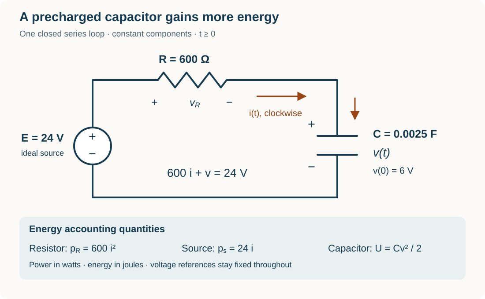

Course practice / Batch 17 / 2026-10-12 PDT
MTH 256
一阶微分方程
First-order differential equations · 阶数与线性、初值及解验证、方向场、分离变量、积分因子、牛顿冷却、指数与逻辑斯蒂增长、定容混合模型及 RC 电路
A corner can invalidate a proposed solution
Consider \(y^{\prime}+2y=0\), y(0) = 1, on all real t. The candidates are \(u(t)=e^{-2t}\) and \(w(t)=e^{-2|t|}\), where |t| is the absolute value of t. Both variables are dimensionless. A solution on an open interval must have a derivative at every time in that interval.
- Identify the independent variable, dependent variable, and order. Is the differential equation linear in y? Evaluate u(0) and w(0).
- Differentiate u and verify the differential equation for every real t. For w, use |t| = −t when t < 0 and |t| = t when t > 0. Check the equation separately on those two intervals.
- Find the left-hand and right-hand derivatives of w at t = 0. Which candidate solves the stated IVP on an open interval containing zero? Find the initial slope required by the differential equation, and explain why matching the initial value and the right-hand slope alone does not verify w on such an interval.
中文提示（不含解答）
先把绝对值在零点两侧分别写开。初值检查只涉及函数值；解的验证还要求区间内每一点都可导，并满足方程。
A hyperbola marks the horizontal slope segments
For \(y^{\prime}=1-ty\), both variables are dimensionless and all real pairs (t,y) are allowed. Put t on the horizontal axis and y on the vertical axis.
- Calculate the slopes at all nine points with \(t\in\{-1,0,1\}\) and \(y\in\{-1,0,1\}\), then sketch a short segment at each point. Explain why every segment in the t = 0 column has the same slope.
- Find the full set of points where the slope is zero. For t > 0, state the slope sign above and below that curve; repeat for t < 0. State whether there are any horizontal slope segments at t = 0.
- Test \(y(t)=1/t\) as a proposed solution on t > 0. Can any constant function solve the equation for every real t? Find the slope of every solution as it crosses the vertical axis, and explain why a curve made of zero-slope locations need not itself be a solution.
中文提示（不含解答）
判断零斜率时先令右端等于零；比较曲线上下方时，t 的正负会改变不等式方向。再把候选曲线自己的导数与场给出的斜率比较。
A response reaches zero and then stays there
Consider \(y^{\prime}=-2\sqrt{y}\), y(0) = 9, for t ≥ 0, with both variables dimensionless and y ≥ 0. The square root is the nonnegative real root. First solve while y > 0; then test a continuation that stays at zero after the first zero is reached. At t = 0 use a right-hand derivative.
- Separate variables on an interval where y > 0 and use the initial condition. State the sign restriction before squaring your equation. Find the first time at which this positive branch reaches zero, and the constant equilibrium excluded when dividing by \(\sqrt y\).
- Write the proposed solution for all t ≥ 0 by joining the positive branch to zero. Check continuity and both one-sided derivatives at the joining time, then verify the differential equation there and on both sides. Explain why simply using the same squared expression after the joining time would fail.
- Find the first time y = 1 and the slope then. Find the elapsed time for the decrease 9 → 1 and for the decrease 1 → 0. Compare those intervals and state the long-term value. Does this model merely approach zero asymptotically, or reach it at a finite time?
中文提示（不含解答）
分离后得到的是平方根本身的等式，因此右端必须非负。平方会丢掉这个限制；拼接后还要检查零点处的导数。
The same response height occurs on two sides of a minimum
For t > 0, solve \(y^{\prime}+y/(2t)=1/(2\sqrt t)\), y(1) = 2. Both variables are dimensionless and every square root is the nonnegative real root. Study the whole stated domain t > 0.
- Find an integrating factor, display the product-derivative equation, and solve the IVP. Verify the differential equation and the initial value.
- Find every t > 0 for which y(t) = 2. A substitution \(x=\sqrt t\) may help. Calculate the slope at each of those times and explain how the same response value can occur with different slopes.
- Use the derivative sign to find where the solution decreases and increases, and find the time and value of its global minimum. Find its limits as t approaches 0 from the right and as t tends to infinity. State the maximal open interval containing t = 1 allowed by the original IVP.
中文提示（不含解答）
积分因子含平方根，但乘开后的右端很简单。求同一高度对应的时间时，可先解关于正数 √t 的二次方程，再换回 t。
A fading input can drive an unbounded linear response
Solve \(y^{\prime}-y=2e^{-t}\), y(0) = 0, for t ≥ 0. Both variables are dimensionless. The input \(2e^{-t}\) is positive and tends to zero as time increases.
- Use an integrating factor to solve the IVP. Verify the differential equation and initial value, and find the initial slope.
- Find the first time y = 3/2, exactly and to three decimals. Use \(x=e^t\), with x ≥ 1, to solve the target equation, and explain why the other algebraic root is inadmissible. Find the slope at the valid time.
- Use your formula and derivative to show whether y is positive and increasing for t > 0. Find the long-term behavior of y and the limit of \(e^{-t}y(t)\). Rewrite the original equation as an expression for \(y^{\prime}\) and explain why a fading input does not force this response to decay.
中文提示（不含解答）
注意标准形式中 y 的系数是负数。把方程改写为 y′ = … 后，再判断未知函数本身对变化率的贡献。
Temperature-rate pairs reveal the room and cooling coefficient
A sample follows \(T^{\prime}=-k(T-A)\), where its constant room temperature A, in °C, and k > 0, in min\(^{-1}\), are unknown. When T = 70 °C its measured rate is −6.0 °C/min; when T = 30 °C its measured rate is −2.0 °C/min. These are rates at the stated temperatures, not readings at specified times. In a prediction trial the same sample and room have T(0) = 90 °C. Use t in minutes and this single constant-environment model for t ≥ 0.
- Use the two temperature-rate pairs to determine k and A exactly, including units. Check both measurements in Newton’s law. Does the fitted room temperature lie below both measured sample temperatures?
- Solve the prediction IVP for T(t) and verify T(0). Find the first times T = 70 °C and T = 30 °C, exactly and to three decimals in minutes. Find the elapsed time between those readings.
- Find the first time the magnitude of the cooling rate falls to 0.50 °C/min, exactly and to three decimals, and the temperature then. Show whether the rate magnitude remains below that threshold afterward. State the limiting temperature and whether it is reached at finite time.
中文提示（不含解答）
每个温度与对应速率提供一个方程。先将两个方程相减消去环境温度，再把求出的参数用于同一个初值模型。
Population increases reveal an unrecorded starting count
A continuously modeled culture obeys \(P^{\prime}=rP\), with unknown constants r > 0 in h\(^{-1}\) and P(0) > 0 organisms. The starting count was not recorded. The population increases by exactly 40 organisms during 0–2 h and by exactly 60 organisms during 2–4 h. Thus \(P(2)-P(0)=40\) and \(P(4)-P(2)=60\). Assume no removals or carrying-capacity limit, and use t in hours for t ≥ 0.
- Write P(t) in terms of P(0) and r. Set \(b=e^{2r}\) and express both observed increases using b and P(0). Determine b, r, and P(0), with r exact and to four decimals with units.
- Give the fitted P(t). Find P(2), P(4), and P(6), and verify both observed increases. Predict the increase during 4–6 h and explain why equal time intervals have a fixed gain ratio here, rather than equal gains.
- Find the first time the accumulated increase equals the initial population, exactly and to three decimals in hours. Find the instantaneous growth rate then, exactly and to three decimals in organisms/hour, and compare it with the average growth rate since t = 0.
中文提示（不含解答）
相邻两段的增加量都含有同一个因子 b − 1。先比较增加量的比值，再恢复初始数量；不要把 40 或 60 当作某次直接计数。
Choose a starting count for a logistic deadline
A culture follows \(N^{\prime}=rN(1-N/1200)\), with \(r=(\ln3)/3\) day\(^{-1}\). The initial count n = N(0) may be chosen anywhere in 0 < n < 1200 organisms. The goal is N(6) ≥ 900 organisms. Treat N as continuous, use t in days, and keep the same logistic model for all t ≥ 0.
- Find and classify the nonnegative equilibria using slope signs. Solve the IVP in terms of n by separation, and check the parameterized initial value.
- Find the full interval of allowed initial counts n that meets the day-6 goal. Show the inequality steps and identify the smallest acceptable n. Explain why increasing n improves N(6) under this model.
- Use the smallest acceptable n. Find N(3), N(6), and the long-term limit. Find the greatest total growth rate attained by this trial, exactly and to three decimals in organisms/day, and when it occurs. Does meeting the day-6 goal require the total growth rate to keep increasing for all six days?
中文提示（不含解答）
先保留初始数量 n，直到求出解。目标时刻的指数因子可以精确计算；最大总增长率要看数量是否经过承载量的一半。
The collected rinse can be saltier than the current tank
A tank contains 80 L of liquid and initially 4.8 kg of dissolved salt. Pure water enters at 4.0 L/min, and perfectly mixed liquid leaves at 4.0 L/min. All outgoing liquid is collected in a separate, initially empty container with unlimited capacity; nothing returns to the tank. Assume constant rates, perfect tank mixing, no evaporation, and no other losses. Let S(t) be tank salt mass in kg, C(t) its concentration in kg/L, W(t) the collected liquid volume in L, and M(t) the collected salt mass in kg. For t > 0, define the collected average concentration as \(\overline C(t)=M(t)/W(t)\). Use t in minutes. The collection requirement is \(\overline C\le0.030\) kg/L.
- Find the tank volume and solve the IVP for S(t); give C(t). Find W(t), then obtain M(t) by integrating the outgoing salt rate. Check S(t) + M(t) against the initial salt mass and write \(\overline C(t)\) for t > 0.
- Find the first time the tank concentration itself reaches 0.030 kg/L, exactly and to three decimals. Find the collected salt mass, liquid volume, and average concentration then, giving their values to three decimals, three decimals, and five decimals respectively. Does the collected liquid already meet the requirement?
- Let u = t/(20 min), so u is dimensionless. Derive an equation for the earliest positive time when the collected average reaches 0.030 kg/L. Explain why u = 0, which appears after multiplying by u, is not an allowed answer. Use a calculator or numerical root method to bracket the positive root between u = 1.5 and u = 1.7 and find the time to three decimals. At that time find the tank concentration and collected volume, to five and three decimals. Show that the collected average decreases strictly for t > 0, so the requirement stays satisfied afterward.
中文提示（不含解答）
当前槽液的浓度是一个时刻的值，收集液的平均浓度包含从开始到现在的全部出流。平均浓度只在已收集到正体积后才有定义。
Follow the energy while a precharged capacitor rises
The diagram shows one closed series loop with an ideal constant 24 V source, R = 600 Ω, and C = 0.0025 F. Capacitor voltage v(t), in volts, is the upper-plate potential minus the lower-plate potential, with v(0) = 6 V. Current i(t), in amperes, is referenced clockwise into the upper plate, giving \(Ri+v=24\). Use ideal components, t in seconds, and the unchanged loop for t ≥ 0. The resistor dissipates power \(p_R=Ri^2\) in watts, the source delivers power \(p_s=24i\) in watts, and the capacitor stores energy \(U=Cv^2/2\) in joules.
- Write and solve the IVP for v(t), then derive i(t). Find the time constant, initial current in mA, long-term voltage and current, and actual current direction at finite times. Verify the initial voltage and loop equation.
- Find the first time v = 18 V, exactly and to three decimals in seconds; call it t*. Find i(t*) in mA and the signed charge delivered into the upper plate during 0 ≤ t ≤ t*. Find the capacitor energies U(0), U(t*), and their difference, in joules. Explain why stored energy at t* differs from energy gained since t = 0.
- Integrate p_R and p_s from 0 to t* to find the energy dissipated by the resistor and the energy delivered by the source. Check that source energy equals resistor energy plus the increase in stored capacitor energy. Repeat this energy accounting over 0 ≤ t < ∞, and find the fraction of the source’s total delivered energy dissipated in the resistor. Is that fraction one-half for this precharged initial state? Give all energies exactly and to three decimals in joules.

中文提示（不含解答）
电荷是电流的时间积分，能量是功率的时间积分。做能量守恒时要使用电容储能的变化量，记得减去开始时已经储存的能量。